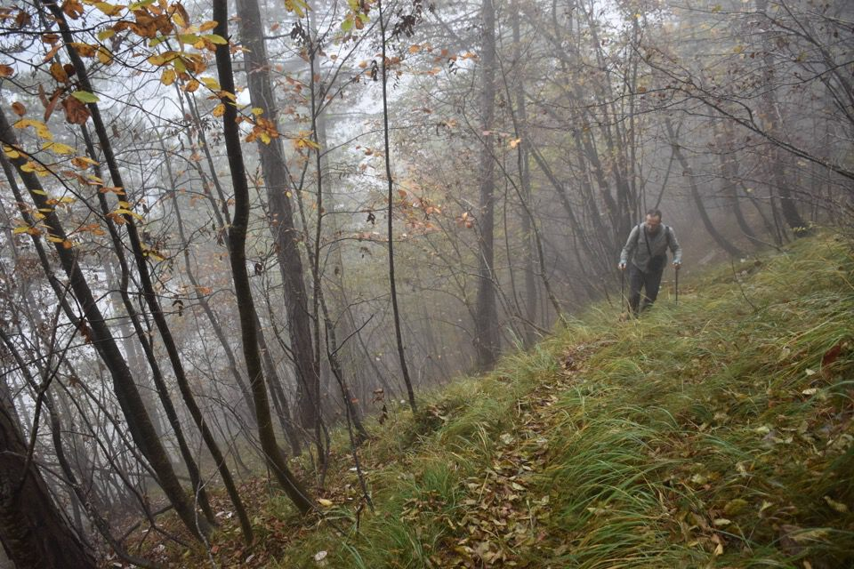
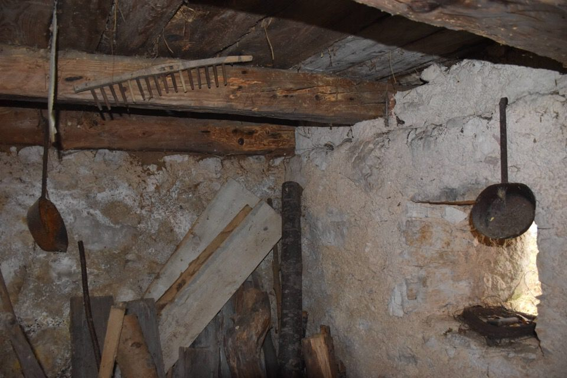

La prima parte della val Raccolana, compresa fra il ponte di S. Floriano e Pecêit, è alquanto stretta e passandoci in macchina nemmeno si fa caso ai numerosi ed ertissimi costoni che salgono verso la dorsale di separazione con val Resia. La zona la si vede bene da Patoc: una prima parte più bassa tutta ad ripidissimi costoni, salti di roccia e cenge; la più alta con dorsali boscose relativamente più dolci che salgono verso il lunghissimo crestone che dal Canin scende fino a Resiutta, oltre la quale, in territorio di Resia, è presente il bellissimo e rilassante altipiano del Pusti Gost (= bosco abbandonato).
Lasciamo la parola a Mario Galli e Dario Marini (da Alpi Giulie Occidentali): «Dalla displuviale tra Raccolana e Resia, pressochè equidistante tra i due alvei, scoscendono a nord numerose profonde forre, che hanno smembrato in una serie di strette dorsali parallele un'antica superficie orografica dolcemente modellata e raccordata alla piatta sommità del Monte Jama. Lungo queste dorsali salgono gli arditi sentieri dei valligiani della Raccolana, che fino a tempi non lontani contendevano alla montagna più aspra legname e poche gerle di fieno. Tre di questi sentieri, battuti dai cacciatori, ancora raggiungono il crinale e consentono la traversata dal «cañon» della bassa Raccolana al Pusti Gost ed alla Val Resia. Questa è una traversata che si raccomanda vivamente, particolarmente a quanti hanno raggiunto una conoscenza approfondita di questi monti ed amano cercare il nuovo nelle antiche cose. Dalla Val Resia salgono al Pusti Gost diversi comodi itinerari, antiche vie pastorali che si raccordano in alto con la grande mulattiera per la Sella Grubia.
Per conoscere il quieto mondo del Pusti Gost, il «bosco abbandonato» dei Resiani, che i lunghi itinerari per il Canin sfiorano appena, occorre andarci di proposito, senza altra meta, con la disposizione d'animo giusta. Non bisogna avere fretta, ma esplorarlo in pace, girando da una all'altra tra quelle oasi di serenità e di dolcezza, lontane dal mondo e dal tempo. Soffermandosi a contemplare, quando oltre un crinale appaiono d'improvviso, le solenni architetture delle grandi montagne circostanti.»
Attenzione che i sentieri segnati sulla Tabacco sono approssimati (presti tali e quali dalla IGM), e del tutto errati nei punti critici: a seguirli col GPS si finisce su enormi salti. Si va in montagna con la testa e non col GPS.
Partiamo da ponte Curìte e seguendo il sentiero che inizialmente sale per la Costa Stretta raggiungiamo in breve il rio Rivîs, a monte delle cascate da cui scendono i torrentisti (fin qui bollinatura blu).
Sul versante opposto iniziamo a salire per una ripida costa, con il sentiero ancora in ottimo stato e tracciato benissimo con molti tornantini. Non si può che apprezzarne la costruzione: gli animali vanno dritto per dritto, mica fanno tornanti.
Anche nella parte alta il sentiero è ben marcato, fin poco sotto lo stavolo Coz, dove sparisce ogni traccia. È comunque facile da trovare in discesa: dai ruderi dello stavolo basta andare verso ovest (piccolo valloncello, intuitivo) dove scesi un po' si rinvengono alcuni tagli e la traccia.
Arriviamo alla spianata dello stavolo Coz...
...o meglio di quel che ne rimane. Che posto!
Poi il crinale prosegue più dolce: ovviamente ogni traccia è sparita, tranne nella parte alta dove incredibilmente c'è un buon sentiero (passando un po' più in basso a est della q1340). Questo è più alto rispetto alla traccia segnata sulla Tabacco, ma si arriva esattamente nel punto di cresta segnato sulla carta.
In foto il versante ovest del Picco Peloso, assai interessante.
È sempre istruttivo guardare il versante sud del complesso sottogruppo del Cimone: il paesino che si vede è Patoc.
Finalmente, zuppi, arriviamo al Pusti Gost resiano.
Salto qualche parte, ma non ha importanza: in un momento in cui la pioggia ha cessato iniziamo a scendere per l'altra costa, inizialmente nel bel valloncello a faggi che scola le acque nel rio di Repepéit. Senza difficoltà alcuna sia arriva al pianoro degli stavoli Sgrant... e che sorpresa trovarne uno ancora ben integro!
Sembra fermo nel tempo, quasi mi dispiace pubblicarne le foto.
Abbiamo avuti diversi grattacapi per trovare il sentiero che scende a valle: ero consapevole che era meglio farlo prima in salita (cosa che non posso che consigliare chiaramente), ma cercando un po' senza farsi prendere dall'ansia lo si trova, anche se in qualche punto è facile perderlo e così ci è successo. Il sentiero scende per una crestina piuttosto ripida e un po' esposta per poi scendere per un pendio boscoso; bisogna capire come raggiungere il rio Repepéit che si ha di fronte, il fatto è che ci sono salti: dopo aver vagato un po' de qua e un po' de là (con una autostrada di camosci sviante), ecco che vedo un cavo attorcigliato ad un albero! La mitica scjalùte di tronchi citata dalla guida del Galli!
Ora il sentiero scende in sx orografica per belle cenge con visioni affascinanti: a differenza del sentiero per stavoli Coz, questo è ben più ardito e interessante.
Sull'orlo della cascata di Repepéit, dove qualche sconsiderato si cala usando dei cordini di calata che abbiamo trovato su di un pino.
In questo posto finché non si mette piede sulla strada non si può stare tranquilli: è vero che la quota è bassa ma ci sono precipizi da ogni parte.
Il cengione che porta a monte della cascata è ben lavorato con numerosi gradini intagliati nella roccia.
Finalmente giù: eravamo lassù.